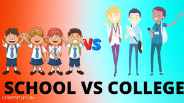

This is Keerthika Mohan...... persuading my Bachelor of Engineering in Madras institute of technology.I completed my schooling in Tirupathi.Our is a family of engineers.My grandpa is an engineer,My father is an Engineer,My brother is an engineer.I believe an engineer is the person who can do any type of job.My ambition is to become an I.A.S officer.My hobbies are watching movies,reading books.
1.I got 1st prize in Bhagavadgeetha competetion in inter school.
2.I got 1st prize in interschool Tennis competetion.
3.I secured 10points in my 10th class.
4.I completed abacus upto level 8.
5.I completed my hindi examination about Praveshika.
6.I got qualified in JEE Mains and wrote JEE Advanced.
7.I got 97%in my 12th examination.

I want to become an IAS Officer and serve my nation.I really want to change my society. I will do my duty correctly and perfectly.I follow the footsteps of Kiran Bedi.I want to be as bold as her.Though She have many political pressures,she performs her duty sincerly.I am working hard from now itself to fulfil my dream to serve my nation.
Click on the image to know about my school life vs cllg life
